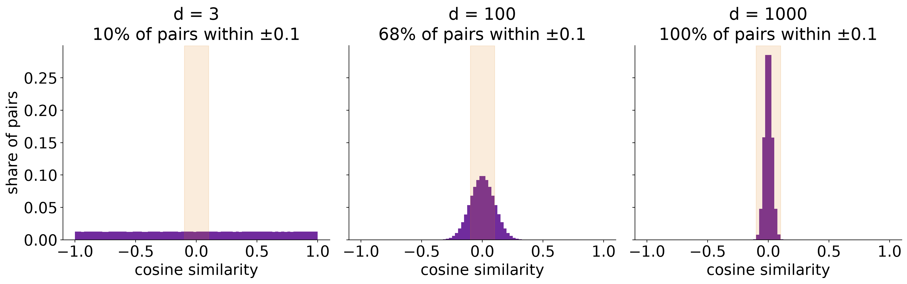

Looking Inside Large Language Models
DS-GA 3001 - Fall 2026
2026-11-24
Five features in two dimensions

Dense features: the model keeps two, at right angles, and drops three. Sparse features: it keeps all five, as a pentagon.
What the hidden activations look like

Each point is one input, plotted by its two hidden activations. With sparse features the directions are visible in the data itself.
More features, more sparsity

Twenty features, five dimensions. The diagonal is which features are represented; anything off the diagonal is interference.
The replacement model

Swap every MLP for a wide layer of sparse features (left). Then trace how features influence one another on a prompt (right).
A first graph: completing an acronym
- Prompt: The National Digital Analytics Group (N
- The model continues with DAG
- Read from the bottom: the words Digital, Analytics, Group each activate a feature for their own first letter
- “say D” and “say A” combine into “say DA_”
- Each box is a supernode: several features with the same role, grouped by hand

Is the graph true? Intervene

Suppress the “Group” features in the real model. “say G” goes to 0%, and the output changes from DAG to acronyms without the G.
Two-hop reasoning
- Prompt: Fact: the capital of the state containing Dallas is
- Claude 3.5 Haiku answers Austin
- Does it look up the answer in one step, or go through Texas?
- The graph: Dallas activates Texas features; capital activates say a capital; together they produce say Austin
- There is also a direct Dallas-to-Austin shortcut. Both paths exist.

Testing it: remove a step

Each panel suppresses one supernode (orange) and shows the effect on the rest and on the top outputs.
Changing the plan

Suppress “rabbit” at the line break and the line ends in “habit”. Inject “green” and the model writes a line that ends in “green”.
One concept, three languages
- Prompts: The opposite of “small” is in English, French and Chinese
- The middle of the graph is shared: small, antonym, large features that do not depend on the language
- Language-specific features sit at the two ends: reading the input, and choosing the output word
- Three swaps, three predictable changes: the operation, the operand, the output language

Turning the circuit by hand

Top: make the model doubt Michael Jordan. Bottom: make it “recognize” Michael Batkin, and it names a sport for a person who does not exist.
A hallucination in the wild

“Name one paper written by Andrej Karpathy.” The name is familiar, so the default is suppressed, and the model names a paper he did not write.
What attribution graphs do not explain

The attention patterns were frozen. The graph shows that information moved from one token to another (left), and cannot show why the model looked there (right).
Filter heads

A head that attends to the list item matching a condition. Move its query vector from a “find the fruit” prompt into a “find the vehicle” prompt, and it attends to the fruit.
The condition is portable

Share of cases in which the patched model answers by the transplanted condition: about 0.8 to 0.95 across languages and list formats, and lower across different tasks.